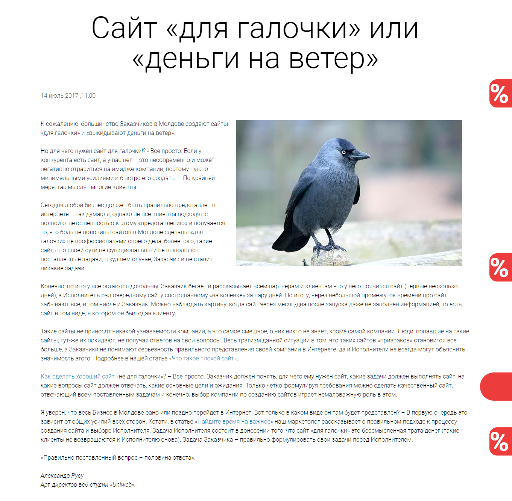
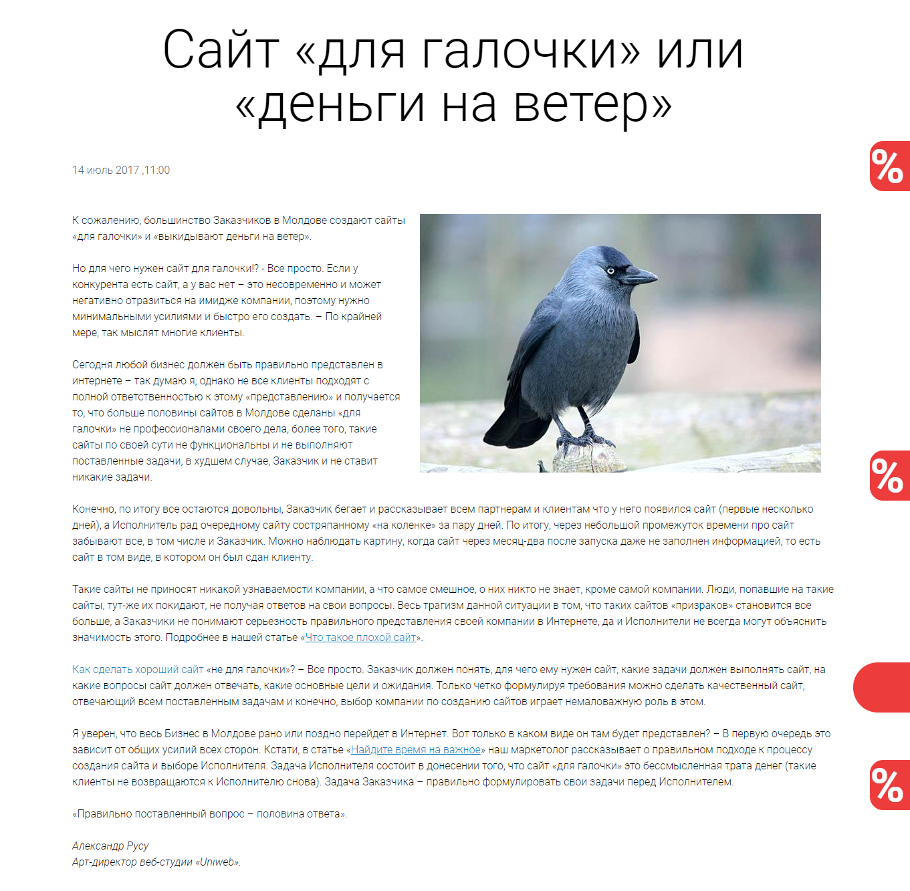

Tematica aleasa: Web Studioul "Uniweb"
1. Procesare text, scanare și recunoaștere texte, tabele, imagini.
In viata de zi cu zi poate aparea necesitatea transformarea textului de pe o imagine,
sau a unui document existent fizic in format digital, text.
Deseori scanarea si digitizarea textului se reduce la rezolvari prin intermediul
resurselor hardware sau scannere.

Insa pentru atingerea unor astfel de scopuri pot fi folosie si produse soft ce permit digitizarea textului din imagini si fisiere pdf. Pentru astfel de scopuri exista aplicatii precum "ABBYY Fine Reader"
Aplicatia data permite procesarea textului, tabelelor de pe imagini sau fisiere pdf,
permitand salvarea output-ului in formatul dorit.
Cu ajutorul aplicatiei date am processat informatia de tip text din tabelul cu datele referitor la Parcul IT Din Moldova,
precum ca compania descrisa e inregistrata in acest parc.
Drept input pentru procesarea tabelelor a fost desemnata urmatoarea imagine:
 Selectand tabelul din imagine si setand ca algoritmul sa selecteze tabelul din zona selectata,
outputul in acest caz se va salva in bufferul de copiere al sistemului
pentru a fi introdus in formatul in care se doreste salvarea acestuia.
In cazul de mai jos , rezultatul s0a inserat in un fisier Word.
Selectand tabelul din imagine si setand ca algoritmul sa selecteze tabelul din zona selectata,
outputul in acest caz se va salva in bufferul de copiere al sistemului
pentru a fi introdus in formatul in care se doreste salvarea acestuia.
In cazul de mai jos , rezultatul s0a inserat in un fisier Word.
 Pentru digitizarea unui text din imagine drept imput a fost selectat imaginea captata de la ecran ce contine un post din pagina "bloguri"
a acestui site.

Postul original poate fi accesat aici .
Deschizand imaginea in ABBYY Fine Reader, selectand portiunea din imagine ce contine textul si specificand tipul outpt-ului asteptat drept text,
in buffer-ul de copiere a calculatorului se va salva output-ul aplicatiei, care fiind salvat in un fisier Word, va arata asa:
Pentru digitizarea unui text din imagine drept imput a fost selectat imaginea captata de la ecran ce contine un post din pagina "bloguri"
a acestui site.

Postul original poate fi accesat aici .
Deschizand imaginea in ABBYY Fine Reader, selectand portiunea din imagine ce contine textul si specificand tipul outpt-ului asteptat drept text,
in buffer-ul de copiere a calculatorului se va salva output-ul aplicatiei, care fiind salvat in un fisier Word, va arata asa:
 Dupa cum se observa, in rezultatul prelucrarii textului din imagine, s-a detectat automat limba textului amplasat insa procesarea a avut loc cu anumite erori, produse de imaginea persistenta in coltul drept de sus al postului.
Erorile date pot fi reduse manual, penru a obine rezultatul final.
Dupa cum se observa, in rezultatul prelucrarii textului din imagine, s-a detectat automat limba textului amplasat insa procesarea a avut loc cu anumite erori, produse de imaginea persistenta in coltul drept de sus al postului.
Erorile date pot fi reduse manual, penru a obine rezultatul final.
2. Digitizarea imaginilor. Procesatea imaginilor digitale
- Rezoluție senzor: 20.0megapixeli;
- Zoom optic: 42x;
- Stabilizator imagine: Da;
- Dimensiune ecran: 3.0inch;
- Rezoluție imagine: 5152 x 3864pixeli;
- Rezoluție video: 1280 x 720pixeli;
- Tip senzor: СCD;
- Procesor imagine: DIGIC 4+;
- Rezoluții imagine: 5152 x 3864 (L) 3648 x 2048 (M) 640 x 424 (S);
- Distanță focală: 4.3 ÷ 180.6 mm (echivalent 35 mm: 24 ÷ 1008 mm);
- Crop factor: 5.62X;
- Diafragmă: F3.5 - F6.6;
- Zoom optic: 42x;
- Zoom digital: 4x;
- Distanța minimă de focalizare: 1 cm în modul Macro;
- Bliț integrat: Da;
- Raza de acțiune bliț: 0.5 - 5m;
- Reducerea efectului de ochi roșii: Da;
Originalul arata astfel:
 Pentru prelucrarea imaginii originale a fost folosit soft-ul Photoshop fiind unul dintre cele mai larg folosit instrument pentru redactarea imaginilor, si avand un numar de instrumentariu closal.
Pentru prelucrarea imaginii originale a fost folosit soft-ul Photoshop fiind unul dintre cele mai larg folosit instrument pentru redactarea imaginilor, si avand un numar de instrumentariu closal.
A fost folosita versionea Photoshop CC 2015 Dupa cum se vede in imaginea de mai jos, aplicatia are instrumente ce ne pot ajuta sa ajustam culorile manual: In imagnea de jos se observa ca am evidentiat histograma imaginii originale: Iar in aceasta imagine , am ajustat contrastul imaginii:
 Deasemenea , cu aceasta aplicatie putem efectua sarcini precum :
Definirea conturului;
Deasemenea , cu aceasta aplicatie putem efectua sarcini precum :
Definirea conturului;
 Sau detectarea ungiurilor:
Sau detectarea ungiurilor:
 Sau eliminarea fonului toalmete:
Sau eliminarea fonului toalmete:

3. Prelucrarea sunetului
Din punct de vedere fizic, sunetul are o definiție mai largă, el nefiind legat de senzația auditivă: orice perturbație (energie mecanică) propagată printr-un mediu material sub forma unei unde se numește sunet.
În această definiție se includ și vibrații la frecvențe din afara domeniului de sensibilitate al urechii:
- infrasunete (sub 20 Hz);
- ultrasunete (peste 20 kHz);
Pentru a efectua cerintele puse in laborator, a fost folosita programa Audacity , ce e cunoscuta pentru gama larga de funtionalitati si tooluri menite sa schimbe sunetul in modul dorit de utilizator.
Mai jos aveti access la fisierul original, in care nu a fost executata procedura de estompare a distorsiunilor din cadrul audio recording-ului.
Iata cum arata el, deschis in Aplicatia data: Odata deschis, putem incerca sa il editam.
Deci , vom incerca sa omitem distorsiunile cu 30 de db. Iar o data ce a fost "curatat" , sunetul a devenit astfel: Iata cum suna varianta finala:
La inceput, fisierul ocupa pe disc circa 310kb, iar dupa editare , ocpa circa 410kb.
4. Prelucrarea video
La realizarea sarcinilor pentru laboratorul dat , a fost folosit softul filmora 9 .
 In cadrul crearii materialului video dat s-a folosit ca surse , ca input materialele video filmate pe aceeasi camera ca si in laboratorul precedent,cat imaginile facute pe camera data.
Rezultatul prelucrarii acestora este mai jos:
In cadrul crearii materialului video dat s-a folosit ca surse , ca input materialele video filmate pe aceeasi camera ca si in laboratorul precedent,cat imaginile facute pe camera data.
Rezultatul prelucrarii acestora este mai jos: